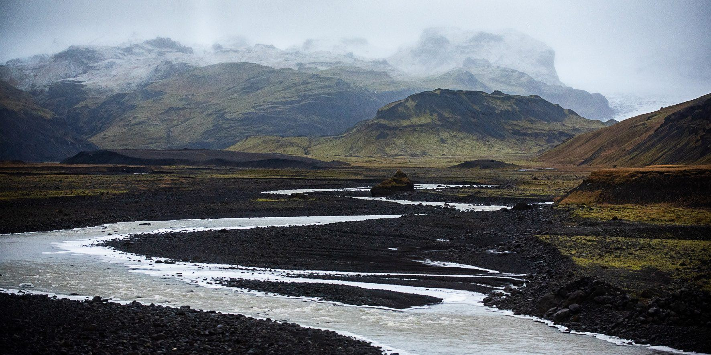
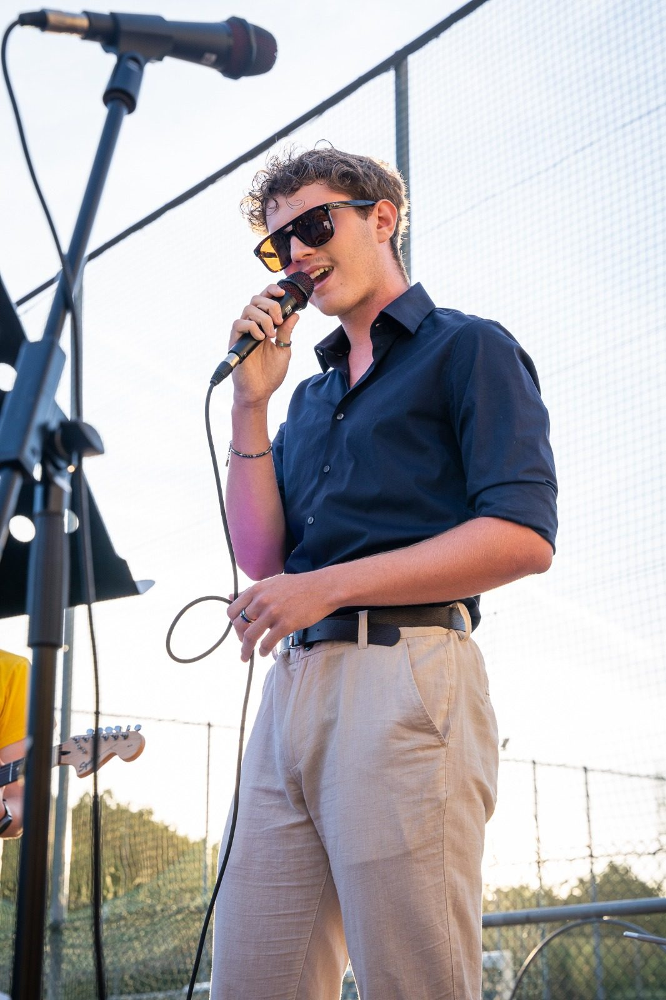

Lavori selezionati

Chi sono
Sono Riccardo Mariani, studente dell'Istituto di Istruzione Superiore Caterina Caniana, indirizzo tecnico Grafica e comunicazione. Unisco fotografia e progettazione grafica per raccontare luoghi, costruire identità e dare forma alle idee.
Scatto, seleziono e postproduco fotografie. Progetto loghi, sistemi visivi e impaginazioni, con attenzione alla composizione e alla relazione tra immagini e testo.
Canon EOS 6D Mark II · Lightroom · Photoshop · Illustrator. Esperienza anche con riprese video, videointerviste scolastiche e utilizzo di droni.
Sono anche musicista: canto, suono chitarra e pianoforte e scrivo canzoni in italiano e in inglese. Lavoro inoltre con un'azienda di ingegneria, dove seguo i social e l'introduzione di agenti AI.